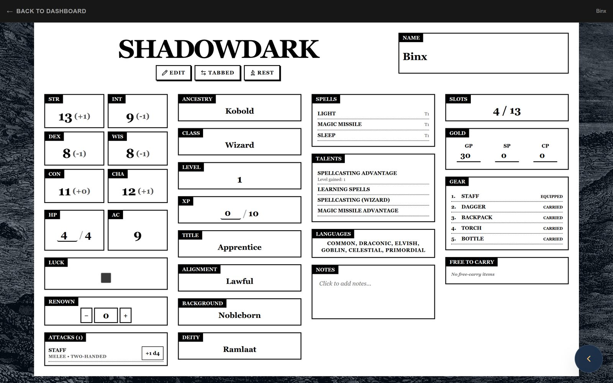
Single-page view
The whole character on one page, laid out like the printed sheet: stats, attacks, spells, talents and gear at a glance.
System module · Shadowdark RPG 1.0
SheetDelver’s most complete system. Players get a sheet built for Shadowdark in two views, with guided character entry and cards for every item and spell. The GM gets monster stats, tokenless combat and a treasure workshop, while the world stays in Foundry.
Requires SheetDelver 0.22.3 or newer
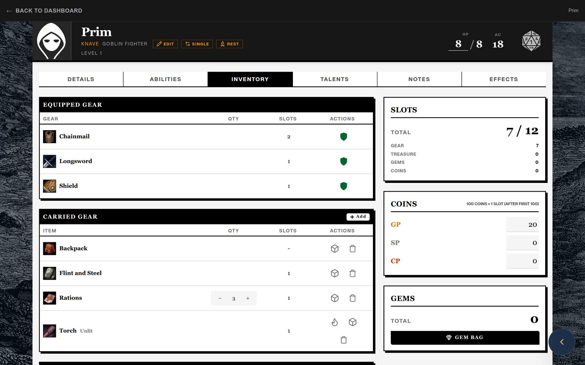
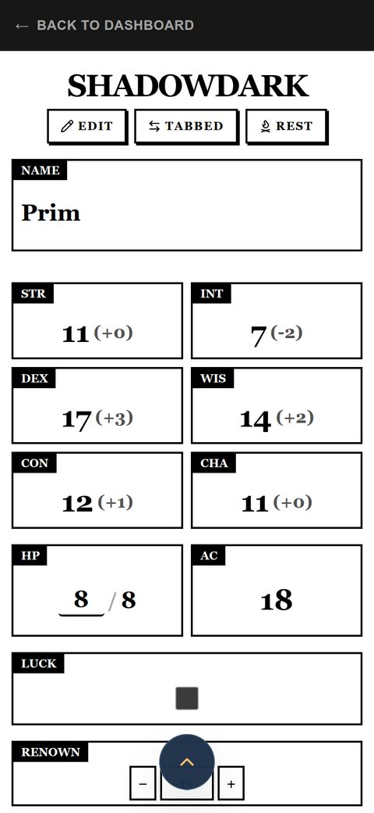
01 / The sheet
Every Shadowdark character has a single-page sheet and a tabbed view. Switch between them from the sheet header at any time.

The whole character on one page, laid out like the printed sheet: stats, attacks, spells, talents and gear at a glance.
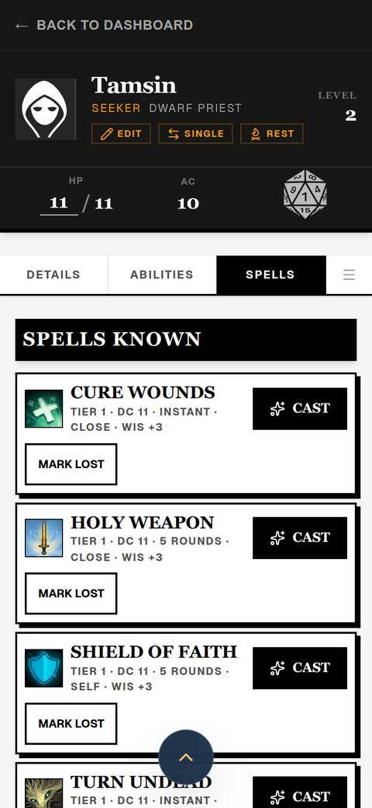
Details, abilities, inventory, talents, notes and effects on their own tabs, with room to manage gear, coins and spells.
02 / Characters
Enter the character you already play, roll a new one or bring one over from Shadowdarklings.net, then level up from the sheet.
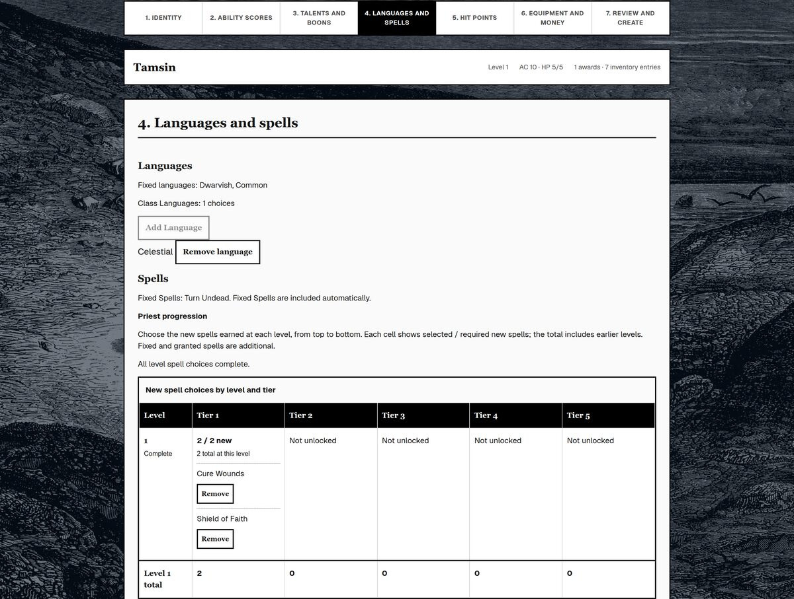
Enter a character you already have on paper, or build one at the level you choose. The Character Creator walks you through seven steps and checks your choices against your class and level. To start fresh, the Character Generator rolls a random character, and characters made on Shadowdarklings.net can be imported.
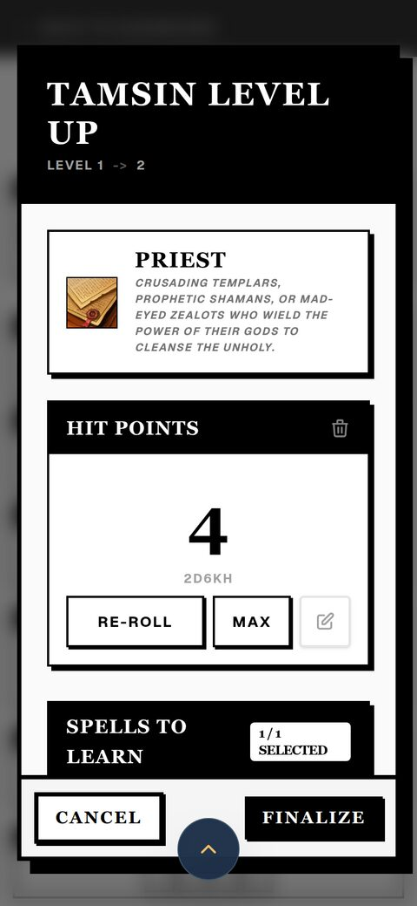
Roll hit points and choose new talents and spells from the sheet, following the core rules up to level 10.
03 / At the table
Tap a weapon, armor, item or spell to open its card. Act on it there, or share it to chat so the table sees it too.
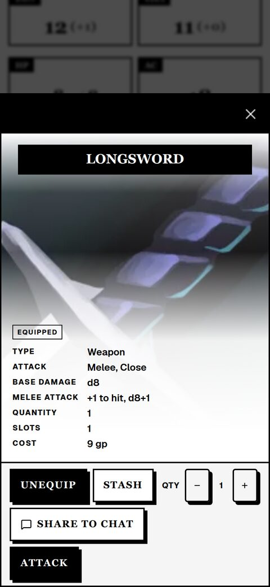
Equip or stash gear, change quantities and attack with your bonuses already applied.
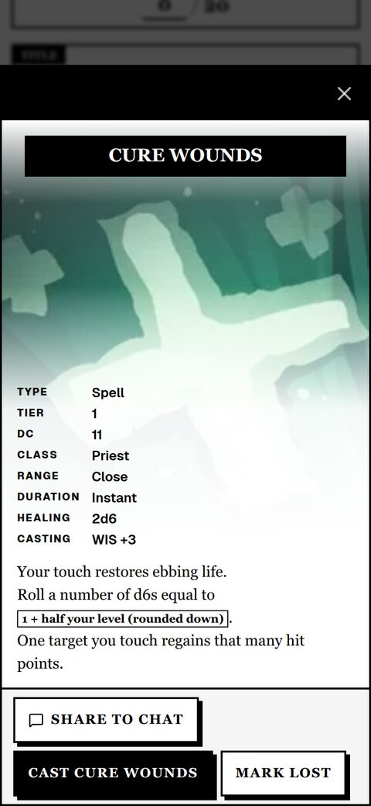
Check tier, DC, range and duration, then cast the spell or mark it lost.
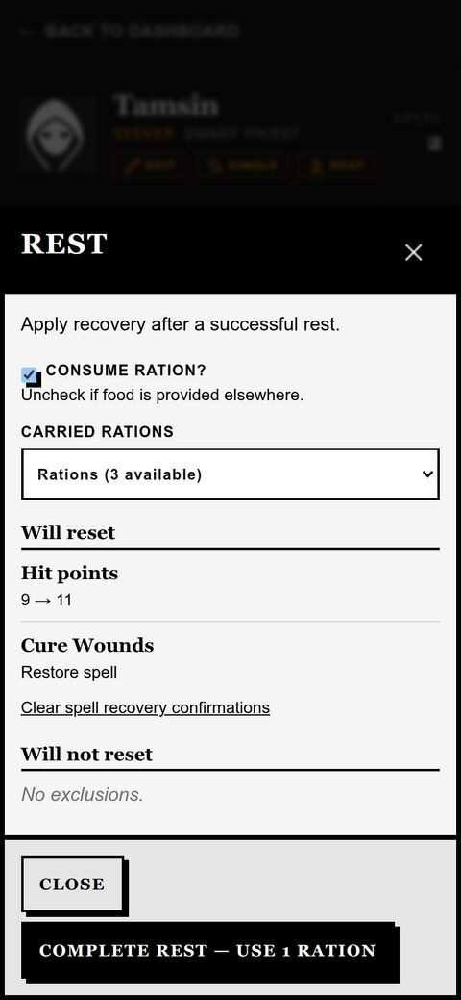
Finish a rest to restore hit points, lost spells and limited-use abilities, with an optional ration.
04 / For the GM
GM tools work beside your Foundry world: look up monsters, run encounters without tokens and hand out treasure.
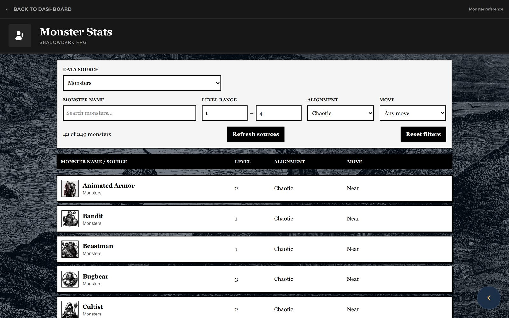
Filter the monsters from your Foundry compendiums and world by name, level, alignment and movement.
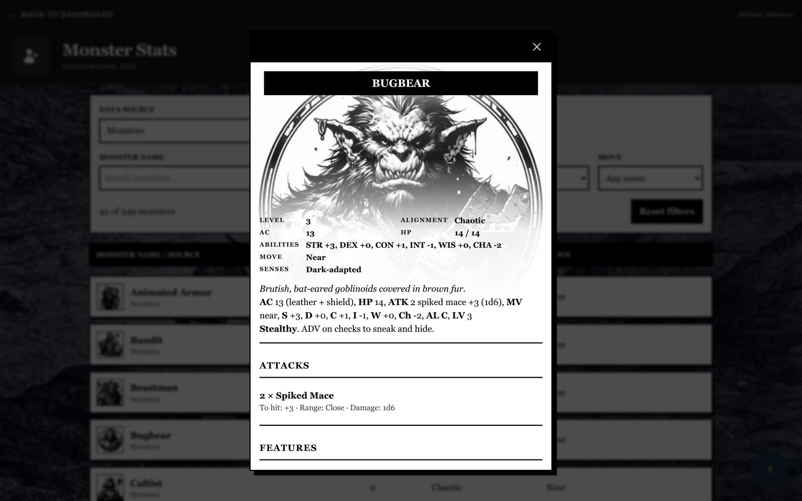
Open a monster to see its AC, HP, abilities, attacks and features at a glance.
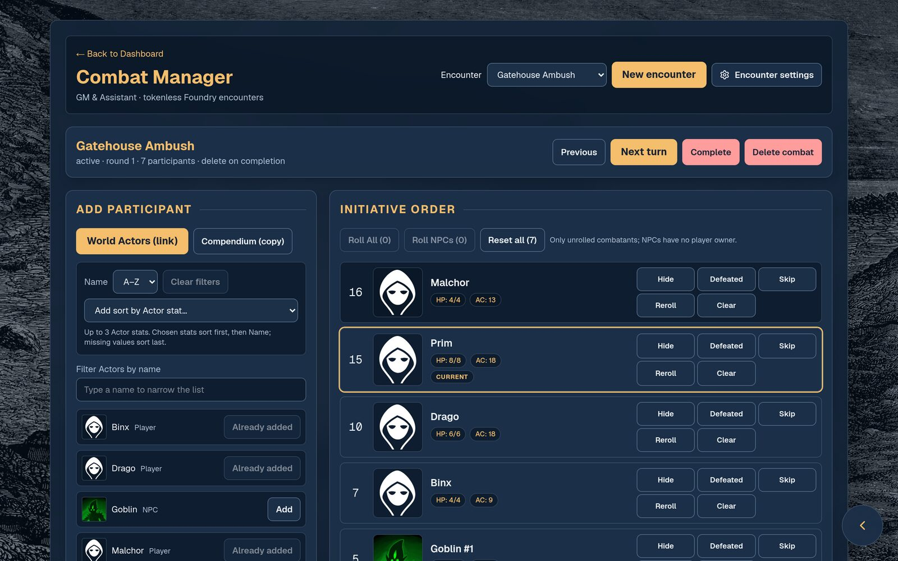
Build encounters without placing tokens, roll initiative in batches or let players roll their own, and track the stats you choose.
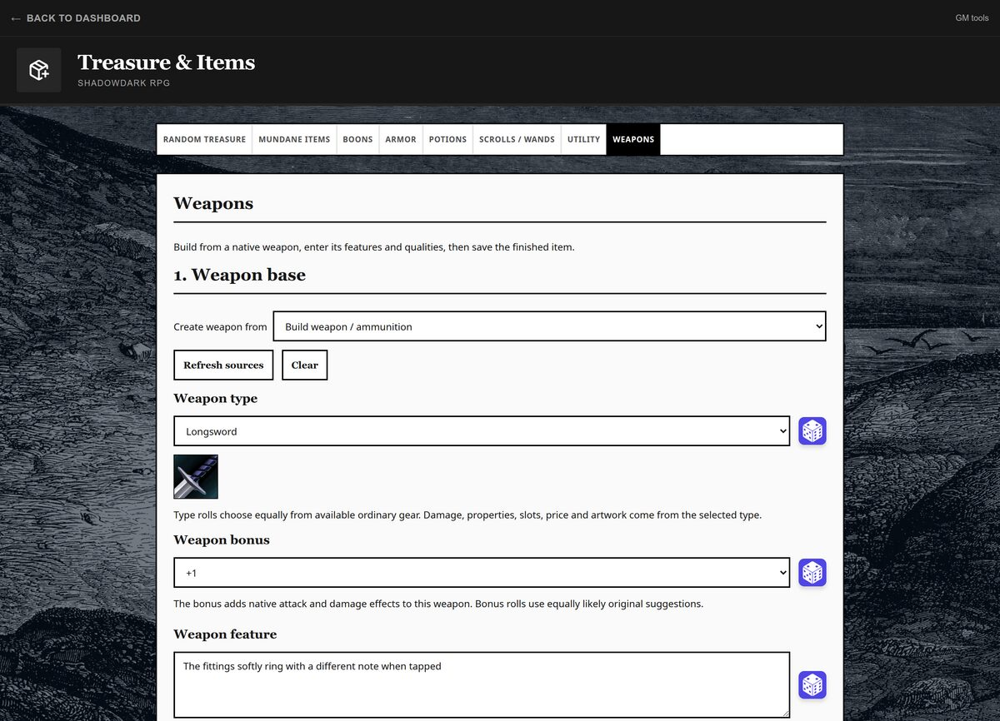
Build weapons, armor, potions, scrolls, wands and boons from your tables or original suggestions, preview them, then save them to a library or give them to a character.
SheetDelver 0.22.3 or newer, and a Foundry world using the Shadowdark RPG system. Install the module from the official catalog in SheetDelver’s admin panel.
This product is an independent product published under the Shadowdark RPG Third-Party License and is not affiliated with The Arcane Library, LLC. Shadowdark RPG © 2023 The Arcane Library, LLC.